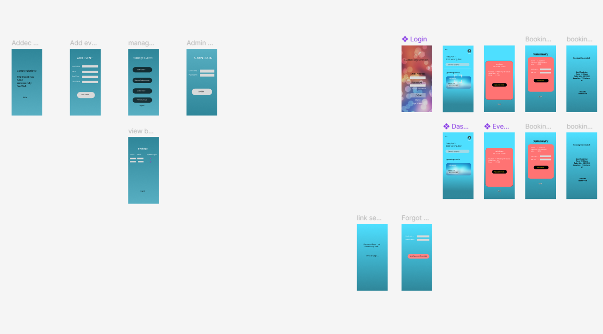

Professional Profile
I am a goal-oriented Technology student focused on high-impact business automation. With technical proficiency in UiPath, AI Builder, and AppSheet, I specialize in building applications that solve operational bottlenecks. My background combines rigorous academic training with practical compliance standards, including SafeCheck Advanced Food Safety, ensuring a disciplined approach to every technical project I undertake.
Skills & Expertise
My resume details my academic journey and technical projects tailored for efficiency-driven roles.
Download Professional ResumeStrategic Work Samples

Intelligent Data Extraction Bot
Manual invoice entry was causing 15% error rates and wasting 10 hours/week.
Built a UiPath RPA bot with OCR to scrape data and sync with Excel.
100% data accuracy and zero manual intervention required for weekly reporting.

Real-Time Inventory System
Lack of visibility in stock levels leading to supply chain delays.
Developed a cross-platform AppSheet application with automated reorder triggers.
Provided instant mobile access to stock data, reducing stock-outs by 40%.